濾波與影像分割#
本章重點
濾波（filtering）是幾乎所有影像處理任務的基礎：去雜訊、強化特徵，本質上都是「重新計算每個像素的值」。
卷積（convolution）與相關（correlation）的差別只在於核心是否翻轉；對稱核心（均值、高斯）兩者結果相同。
均值、高斯、中值、Sobel 是四種最常用的基礎濾波器，各自適合不同情境。
形態學（morphology）用結構元素定義「鄰域」，侵蝕、膨脹、開運算、閉運算是四個基本操作。
分割（segmentation）把影像切成有意義的區域：閾值化最簡單，watershed 能處理相鄰但需要分開的物件。
import numpy as np
import matplotlib.pyplot as plt
import skimage as ski
from scipy import ndimage as ndi
plt.rcParams['image.cmap'] = 'gray'
plt.rcParams['figure.figsize'] = (6, 5)
def imshow_all(*images, titles=None, size=4, **kwargs):
"""並排顯示多張影像，方便比較。"""
images = [ski.util.img_as_float(im) for im in images]
if titles is None:
titles = [''] * len(images)
fig, axes = plt.subplots(nrows=1, ncols=len(images), figsize=(size * len(images), size))
if len(images) == 1:
axes = [axes]
for ax, im, title in zip(axes, images, titles):
ax.imshow(im, **kwargs)
ax.set_title(title)
ax.axis('off')
plt.tight_layout()
return fig, axes
卷積（convolution）與相關（correlation）#
局部濾波（local filtering）的意思是：每個像素的新值，是由它周圍鄰域的像素值按某種權重組合而成，這組權重就是核心（kernel）。最簡單的例子是取相鄰像素的平均，這等價於訊號與核心 [1/3, 1/3, 1/3] 的卷積。
step_signal = np.zeros(100)
step_signal[50:] = 1
rng = np.random.default_rng(42)
noisy_signal = step_signal + rng.normal(0, 0.35, step_signal.shape)
mean_kernel3 = np.full((3,), 1 / 3)
smooth3_valid = np.convolve(noisy_signal, mean_kernel3, mode='valid')
smooth3_same = np.convolve(noisy_signal, mean_kernel3, mode='same')
fig, axes = plt.subplots(1, 2, figsize=(11, 3.5))
axes[0].plot(step_signal, label='clean step')
axes[0].plot(noisy_signal, alpha=0.6, label='noisy')
axes[0].set_title('Input signal'); axes[0].legend()
axes[1].plot(smooth3_valid, label="mode='valid'")
axes[1].plot(smooth3_same, label="mode='same'")
axes[1].set_title('Smoothed by 3-point mean kernel'); axes[1].legend()
plt.tight_layout()
plt.show()
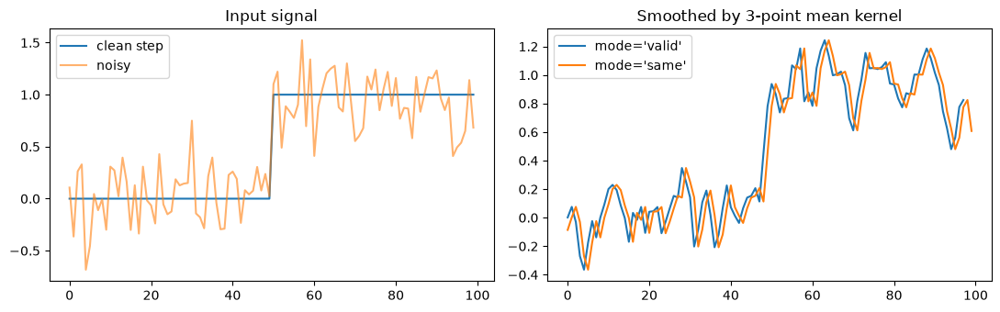
卷積 vs. 相關：核心有沒有被翻轉#
對對稱核心（例如上面的均值核心）而言，卷積和相關的結果完全一樣，所以兩個詞常被混用（甚至 CNN 文獻中所謂的「卷積層」，實作上做的其實是相關）。但對不對稱核心（例如用來估計梯度的差分核心）而言，兩者方向相反——convolve 在滑動前會先把核心翻轉 180 度，correlate 則直接滑動做內積。影像處理中談的「濾波」，多半指的是相關運算。
diff_kernel = np.array([1, 0, -1], dtype=float) # 不對稱核心
conv_result = ndi.convolve1d(noisy_signal, diff_kernel, mode='nearest')
corr_result = ndi.correlate1d(noisy_signal, diff_kernel, mode='nearest')
fig, ax = plt.subplots(figsize=(8, 3.5))
ax.plot(conv_result, label='ndi.convolve1d (kernel flipped)')
ax.plot(corr_result, label='ndi.correlate1d (kernel as-is)')
ax.set_title('Asymmetric kernel: convolution vs. correlation')
ax.legend()
plt.tight_layout()
plt.show()
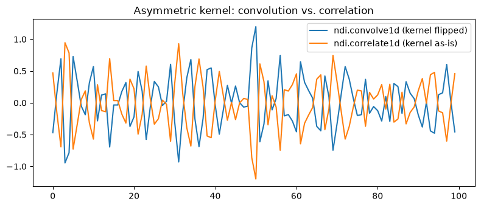
影像的局部濾波：均值與高斯#
把同樣的概念延伸到 2D 影像。均值濾波器（mean filter） 對鄰域中所有像素給予相同權重；高斯濾波器（Gaussian filter） 則讓權重隨距離中心越遠而遞減，是最經典的平滑化濾波器。高斯濾波器的平滑程度由 sigma 控制：sigma 越大，平滑範圍越廣，細節損失也越多。
bright_square = np.zeros((7, 7), dtype=float)
bright_square[2:5, 2:5] = 1
mean_kernel = np.full((3, 3), 1)
smooth_mean = ski.filters.rank.mean(ski.util.img_as_ubyte(bright_square), mean_kernel)
smooth_gauss = ski.filters.gaussian(bright_square, sigma=1)
imshow_all(bright_square, smooth_mean, smooth_gauss,
titles=['original', 'mean filter (3x3)', 'gaussian filter (sigma=1)']);
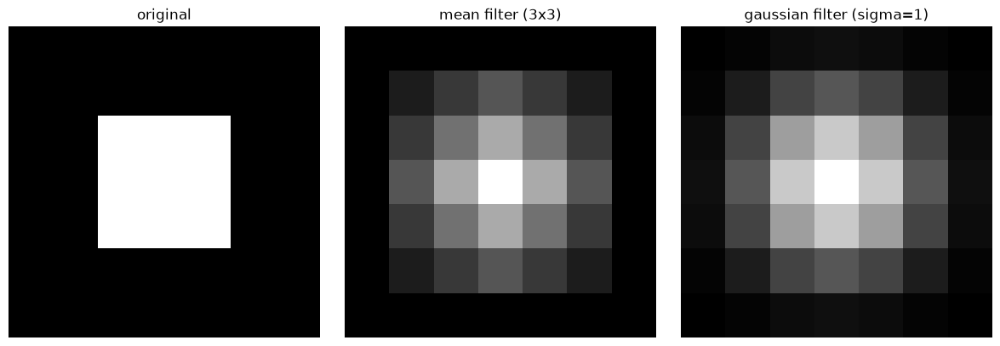
# 比較同一張影像在不同 sigma 下的平滑效果（取代原本的互動式滑桿，改以靜態圖序列呈現）
coins = ski.util.img_as_float(ski.data.coins())
sigmas = [0.5, 1, 2, 4]
fig, axes = plt.subplots(1, len(sigmas) + 1, figsize=(4 * (len(sigmas) + 1), 4))
axes[0].imshow(coins); axes[0].set_title('sigma=0 (original)'); axes[0].axis('off')
for ax, sigma in zip(axes[1:], sigmas):
ax.imshow(ski.filters.gaussian(coins, sigma=sigma))
ax.set_title(f'sigma={sigma}')
ax.axis('off')
plt.tight_layout()
plt.show()
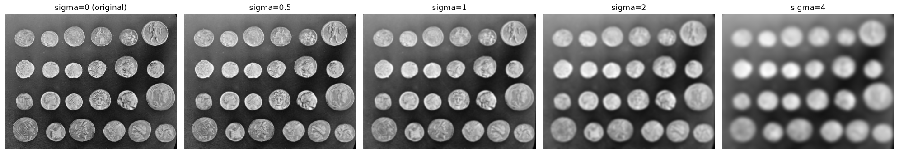
Sobel 邊緣濾波#
影像的邊緣可以看成「梯度值很大」的地方，Sobel 濾波器就是用來估計局部梯度的經典差分核心。銳利的雜訊常會扭曲梯度估計，所以邊緣偵測前經常先做平滑化。
gradient_before = ski.filters.sobel(coins)
gradient_after = ski.filters.sobel(ski.filters.gaussian(coins, sigma=2))
imshow_all(gradient_before, gradient_after,
titles=['Sobel gradient (no smoothing)', 'Sobel gradient (after Gaussian smoothing)']);
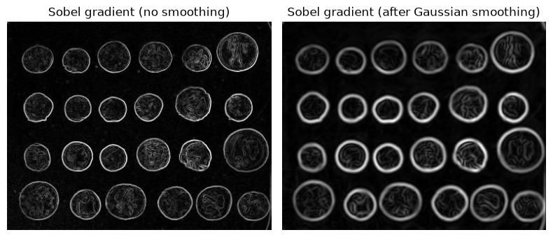
中值濾波：保留邊緣的去雜訊#
均值與高斯濾波器會把影像中所有的變化（包含物件邊緣）一併平滑掉。中值濾波器（median filter） 則會回傳鄰域內像素值的中位數：在銳利邊緣附近，暗值與亮值各佔一堆、中間值很少，中位數自然會落在暗值或亮值上，邊緣因此得以保留。
coins_u8 = ski.data.coins()
neighborhood = ski.morphology.disk(radius=5)
mean_coin = ndi.uniform_filter(coins_u8.astype(float), size=11)
median_coin = ndi.median_filter(coins_u8, footprint=neighborhood)
imshow_all(coins_u8, mean_coin, median_coin, titles=['original', 'mean filter', 'median filter']);
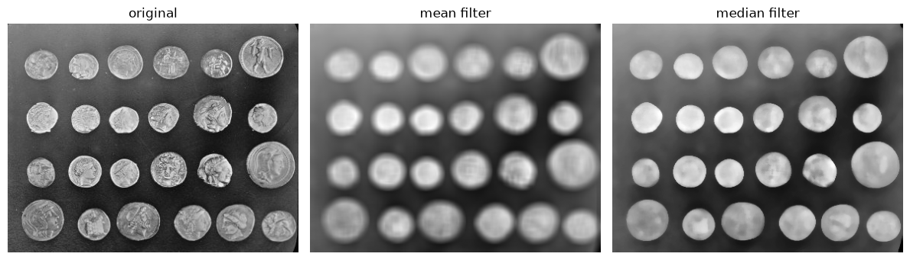
形態學運算（morphological operations）#
形態學是「研究形狀」的學問，運算對象通常是二值（或灰階）影像，透過一個結構元素（structuring element） 定義每個像素的鄰域範圍。常見的結構元素有正方形 square、菱形 diamond、圓盤 disk。有了結構元素，就能定義四個最基本的形態學運算：
侵蝕（erosion）：只有當結構元素涵蓋的所有像素都是前景時，該像素才維持前景，否則被侵蝕掉——會讓前景物件縮小。
膨脹（dilation）：只要結構元素涵蓋的範圍內有任一像素是前景，該像素就變成前景——會讓前景物件變大。
開運算（opening）= 先侵蝕再膨脹：可以去除小雜點、切斷細小的連結。
閉運算（closing）= 先膨脹再侵蝕：可以填補前景內部的小孔洞。
sq = ski.morphology.footprint_rectangle((7, 7))
dia = ski.morphology.diamond(radius=3)
disk = ski.morphology.disk(radius=15)
imshow_all(sq, dia, disk, titles=['square', 'diamond', 'disk']);
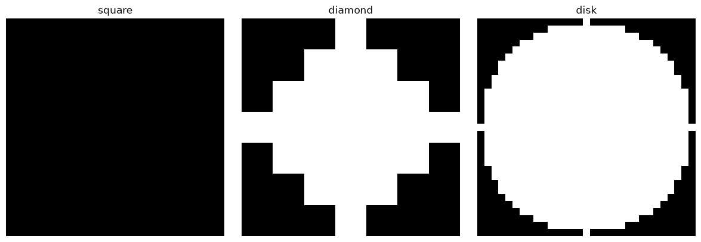
blob = np.zeros((16, 14), dtype=np.uint8)
blob[3:9, 4:10] = 1
blob[6, 7:9] = 0 # 內部小孔洞
blob[0, 0] = blob[1, 13] = blob[7, 0] = blob[10, 0] = blob[8, 13] = 1 # 零星雜點
sq3 = ski.morphology.footprint_rectangle((3, 3))
results = [blob,
ski.morphology.erosion(blob, sq3),
ski.morphology.dilation(blob, sq3),
ski.morphology.opening(blob, sq3),
ski.morphology.closing(blob, sq3)]
titles = ['original (noise + hole)', 'erosion', 'dilation', 'opening (rm noise)', 'closing (fill hole)']
imshow_all(*results, titles=titles, size=3);
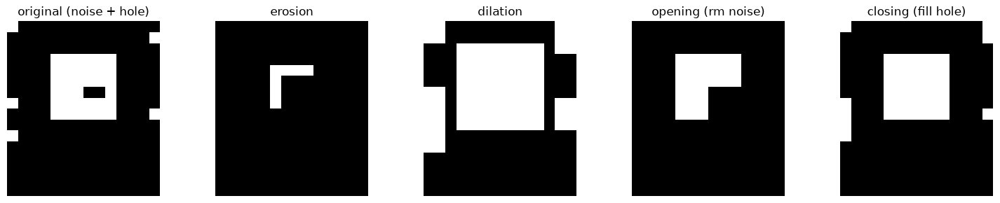
閾值化（thresholding）#
閾值化是分割課程中最先介紹的技術：純粹依像素強度把影像切成兩類，完全不使用鄰域資訊。單一全域閾值在光照均勻的影像上很有效，但遇到光照不均的影像就會失敗——skimage.filters.try_all_threshold() 可以一次比較多種自動閾值法，方便快速挑選合適的方法；其中 Otsu 法透過最大化類別間變異數來自動選定閾值，是最常用的自動閾值法。
text = ski.data.page()
fig, axes = plt.subplots(1, 3, figsize=(13, 4))
axes[0].imshow(text); axes[0].set_title('original (uneven illumination)'); axes[0].axis('off')
axes[1].imshow(text < 100); axes[1].set_title('naive threshold: text < 100'); axes[1].axis('off')
axes[2].imshow(text < ski.filters.threshold_otsu(text)); axes[2].set_title('Otsu threshold'); axes[2].axis('off')
plt.tight_layout()
plt.show()
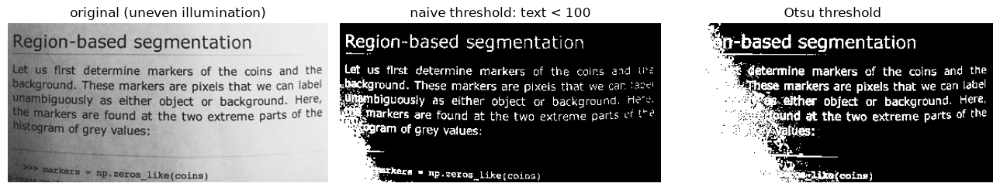
fig, ax = ski.filters.try_all_threshold(text, figsize=(9, 8), verbose=False)
plt.tight_layout()
plt.show()
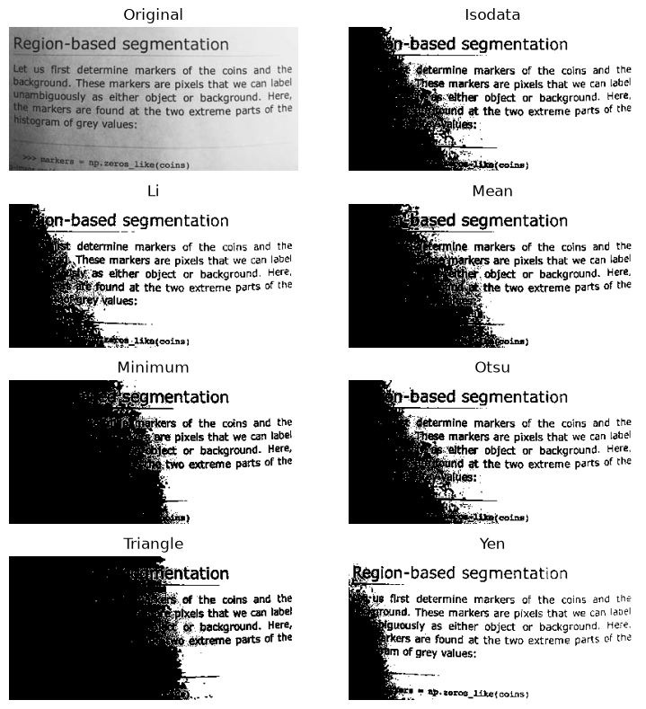
Watershed 分割與 regionprops#
當物件彼此相鄰、單純閾值化無法分開時，可以改用基於區域的分割方法。Watershed（分水嶺）演算法把梯度強度影像想像成地形圖，從指定的標記點（markers）開始模擬淹水過程，水無法跨越的地方就是分割邊界。標記點取自直方圖兩端明顯屬於背景與前景的像素；分割完成後，skimage.measure.regionprops() 可以直接量測每個區域的面積、周長等幾何性質。
coins = ski.data.coins()
elevation_map = ski.filters.sobel(coins)
fig, ax = plt.subplots(figsize=(5, 4))
ax.imshow(elevation_map)
ax.set_title('Elevation map (Sobel gradient)')
ax.axis('off')
plt.show()
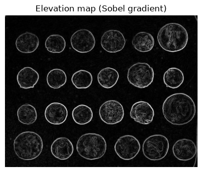
markers = np.zeros_like(coins)
markers[coins < 30] = 1
markers[coins > 150] = 2
segmentation = ski.segmentation.watershed(elevation_map, markers)
segmentation_overlay = ski.color.label2rgb(segmentation, image=coins, bg_label=1)
fig, axes = plt.subplots(1, 2, figsize=(10, 4))
axes[0].imshow(segmentation); axes[0].set_title('watershed labels'); axes[0].axis('off')
axes[1].imshow(segmentation_overlay); axes[1].set_title('overlay on original'); axes[1].axis('off')
plt.tight_layout()
plt.show()
properties = ski.measure.regionprops(segmentation)
for prop in properties:
print(f'label {prop.label}: area = {prop.area:.0f} px, perimeter = {prop.perimeter:.1f} px')
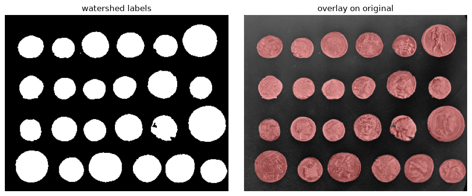
label 1: area = 77442 px, perimeter = 5082.6 px
label 2: area = 38910 px, perimeter = 3577.9 px
HOG：梯度方向直方圖#
梯度方向直方圖（Histogram of Oriented Gradients, HOG）是常見的影像特徵描述子：先計算每個像素的梯度方向與大小，再把影像切成小格（cell），統計每格內梯度方向的直方圖，最後做跨區塊正規化。其核心假設是「局部形狀可以由邊緣方向的分布來描述」。
fd, hog_image = ski.feature.hog(coins, orientations=8, pixels_per_cell=(16, 16),
cells_per_block=(1, 1), visualize=True)
hog_image_rescaled = ski.exposure.rescale_intensity(hog_image, in_range=(0, 10))
imshow_all(coins, hog_image_rescaled, titles=['input image', 'HOG visualization'])
print('feature vector shape:', fd.shape)
feature vector shape: (3456,)
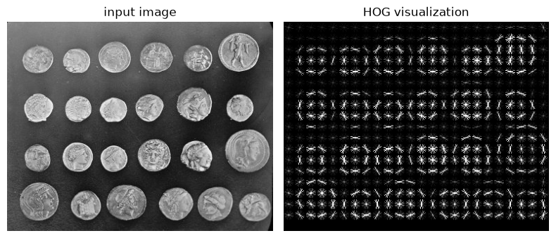
與 cryo-EM 的連結
Cryo-EM micrograph 的訊噪比極低，高斯與中值濾波是 particle picking 前最常見的 denoising 手段：高斯濾波用來壓低高頻雜訊、讓粒子輪廓浮現；中值濾波則在保留邊緣的前提下去除離群的雜訊點。
模板匹配（template matching）與 blob 偵測是自動 particle picking 的基礎做法之一：把粒子的大致形狀當作「特徵」，在整張 micrograph 上滑動比對，找出高相似度的位置——概念上與本章的相關運算、以及 HOG 這類「用局部梯度分布描述形狀」的想法是相通的。
形態學運算在前處理中常用來製作與清理遮罩（mask）：例如用開運算去除誤判的小雜點、用閉運算填補遮罩內部的小孔洞，得到乾淨的前景／背景區域，供後續的 particle picking 或污染物（contaminant）過濾使用。